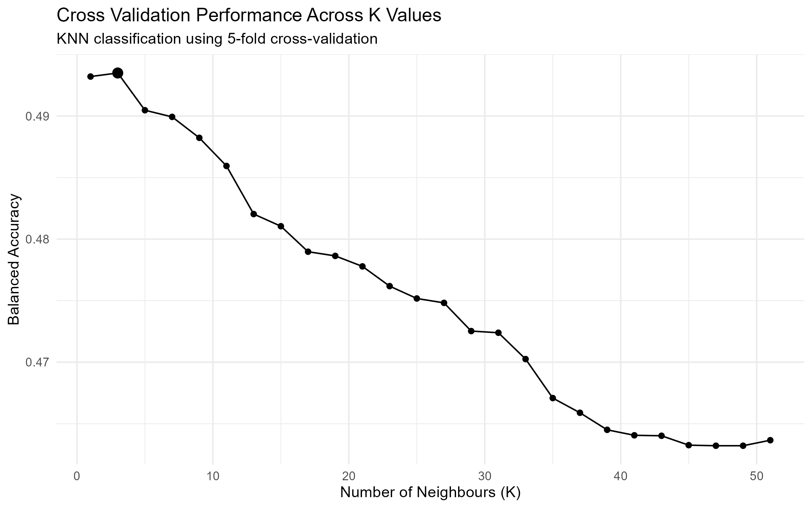

Code
library(tidyverse)
library(tidymodels)
library(patchwork)Prediction failed
library(tidyverse)
library(tidymodels)
library(patchwork)# load processed analysis data
analysis_valid <- read_csv(
"data/processed/analysis_valid.csv",
show_col_types = FALSE)The table below summarizes the most important variables used throughout the data-building and analysis workflow.
| Air Quality | Fire | Relationship |
|---|---|---|
| Station_Date | Fire_ID | days_since_fire |
| Year | Fire_Year | Distance_km |
| Month | Report_Date | fire_count_100km_{7/14/30}d |
| NAPS_ID | Fire_Date | fire_count_250km_{7/14/30}d |
| Station_Name | Fire_Latitude | fire_area_250km_{7/14/30}d |
| Latitude | Fire_Longitude | nearest_fire_km_{7/14/30}d |
| Longitude | Size_Ha | recent_fire_250km_14d |
| mean_pm25 | Cause | fire_activity_250km_14d |
| max_pm25 | Response | fire_distance_group |
| hours_observed | ||
| valid_day | ||
| Month_Name | ||
| pm25_level |
Can recent large-fire activity and proximity be used to classify whether a station day observes a very high PM2.5?
For this analysis, unusually high PM2.5 is defined as a daily mean PM2.5 concentration at or above the 90th percentile of valid station-days. (Data-derived threshold and not an environmental health standard)
# define high pm25
high_pm25_cutoff <- quantile(analysis_valid$mean_pm25, 0.90)
high_pm25_cutoff# create factor
classification_data <- analysis_valid |>
mutate(
pm25_level = if_else(
mean_pm25 >= high_pm25_cutoff,
"High",
"Normal"
),
pm25_level = factor(
pm25_level,
levels = c(
"High",
"Normal"
)
)
)# verify
classification_data |>
count(pm25_level) |>
mutate(percent = n / sum(n) * 100)# A tibble: 2 × 3
pm25_level n percent
<fct> <int> <dbl>
1 High 5815 10.0
2 Normal 52190 90.0Verified that High - 10% and Normal - 90%
# select response and predictors
knn_data <- classification_data |>
select(
pm25_level,
fire_count_100km_14d,
fire_count_250km_14d,
fire_count_250km_7d
)
knn_data |> head()# A tibble: 6 × 4
pm25_level fire_count_100km_14d fire_count_250km_14d fire_count_250km_7d
<fct> <dbl> <dbl> <dbl>
1 Normal 0 0 0
2 Normal 0 0 0
3 Normal 0 0 0
4 Normal 0 0 0
5 Normal 0 0 0
6 Normal 0 0 0# check for NA values
knn_data |>
summarise(across(everything(), ~ sum(is.na(.x))))# A tibble: 1 × 4
pm25_level fire_count_100km_14d fire_count_250km_14d fire_count_250km_7d
<int> <int> <int> <int>
1 0 0 0 0# distribution
knn_data |> summary() pm25_level fire_count_100km_14d fire_count_250km_14d fire_count_250km_7d
High : 5815 Min. : 0.0000 Min. : 0.0000 Min. : 0.0000
Normal:52190 1st Qu.: 0.0000 1st Qu.: 0.0000 1st Qu.: 0.0000
Median : 0.0000 Median : 0.0000 Median : 0.0000
Mean : 0.1238 Mean : 0.9371 Mean : 0.4993
3rd Qu.: 0.0000 3rd Qu.: 0.0000 3rd Qu.: 0.0000
Max. :23.0000 Max. :62.0000 Max. :60.0000 Small Question: How many High-PM2.5 days actually had no recent fire activity according to all 3 predictors?
classification_data |>
mutate(
any_recent_fire = if_else(
fire_count_100km_14d > 0 |
fire_count_250km_14d > 0 |
fire_count_250km_7d > 0,
"Some recent fire activity",
"No recent fire activity"
)
) |>
group_by(pm25_level) |>
summarise(
station_days = n(),
with_recent_fire = sum(any_recent_fire == "Some recent fire activity"),
percent_with_recent_fire =
mean(any_recent_fire == "Some recent fire activity") * 100,
.groups = "drop"
)# A tibble: 2 × 4
pm25_level station_days with_recent_fire percent_with_recent_fire
<fct> <int> <int> <dbl>
1 High 5815 2232 38.4
2 Normal 52190 10542 20.2High PM2.5 station day is about \(38.4/20.2 \approx 1.9\) times likely to have some recent fire activity than a Normal PM2.5 day.
set.seed(555555)
pm25_split <- initial_split(
knn_data,
prop = 0.75,
strata = pm25_level
)
pm25_train <- training(pm25_split)
pm25_test <- testing(pm25_split)Verify the pm25_level was preserved; result must show 10.0% and 90.0%.
pm25_train |>
count(pm25_level) |>
mutate(
percent = n / sum(n) * 100
)# A tibble: 2 × 3
pm25_level n percent
<fct> <int> <dbl>
1 High 4361 10.0
2 Normal 39142 90.0pm25_test |>
count(pm25_level) |>
mutate(
percent = n / sum(n) * 100
)# A tibble: 2 × 3
pm25_level n percent
<fct> <int> <dbl>
1 High 1454 10.0
2 Normal 13048 90.0set.seed(555555)
# create recipe and scale predictors
pm25_recipe <- recipe(pm25_level ~ fire_count_100km_14d + fire_count_250km_14d + fire_count_250km_7d, data = pm25_train) |>
step_scale(all_predictors()) |>
step_center(all_predictors())
# create 5-fold cross-validation on training set
pm25_vfold <- vfold_cv(pm25_train, v = 5, strata = pm25_level)
# create KNN model
knn_spec <- nearest_neighbor(weight_func = "rectangular", neighbors = tune()) |>
set_engine("kknn") |>
set_mode("classification")
# create workflow
pm25_workflow <- workflow() |>
add_recipe(pm25_recipe) |>
add_model(knn_spec)
# tune K
k_final_vals <- tibble(neighbors = seq(from = 1, to = 51, by = 2))
# tuning results
#pm25_results <- pm25_workflow |>
# tune_grid(
# resamples = pm25_vfold,
# grid = k_final_vals,
# metrics = metric_set(accuracy, bal_accuracy, recall, precision))
# load previously calculated tuning results
pm25_results <- readRDS("data/processed/pm25_knn_tuning.rds")
# bal_accuracy because heavily skewed
balanced_accuracies <- pm25_results |>
collect_metrics() |>
filter(.metric == "bal_accuracy")
balanced_accuracies# A tibble: 26 × 7
neighbors .metric .estimator mean n std_err .config
<dbl> <chr> <chr> <dbl> <int> <dbl> <chr>
1 1 bal_accuracy binary 0.493 5 0.000841 pre0_mod01_post0
2 3 bal_accuracy binary 0.493 5 0.00144 pre0_mod02_post0
3 5 bal_accuracy binary 0.490 5 0.00226 pre0_mod03_post0
4 7 bal_accuracy binary 0.490 5 0.00201 pre0_mod04_post0
5 9 bal_accuracy binary 0.488 5 0.00226 pre0_mod05_post0
6 11 bal_accuracy binary 0.486 5 0.00225 pre0_mod06_post0
7 13 bal_accuracy binary 0.482 5 0.00177 pre0_mod07_post0
8 15 bal_accuracy binary 0.481 5 0.00279 pre0_mod08_post0
9 17 bal_accuracy binary 0.479 5 0.00303 pre0_mod09_post0
10 19 bal_accuracy binary 0.479 5 0.00288 pre0_mod10_post0
# ℹ 16 more rows# select K with highest balanced accuracy
best_k <- balanced_accuracies |>
arrange(desc(mean)) |>
slice(1) |>
pull(neighbors)
best_k[1] 3Balanced cross-validation accuracy varied across values of K. The highest estimated balanced accuracy occurred at K = best_k so this value was selected for the final KNN classificaiton model.
Cross-validation performance was highest at approximately K = 3 and generally dereased as the K increased. Therefore, K = 3 was the best fittingvalue for the final KNN classifier. Yet, the balanced accuracy were close to 0.50, suggesting that the fire-count predictors alone may have limitations to distinguish High from Normal PM2.5 station days.
best_k_point <- balanced_accuracies |>
filter(neighbors == best_k)
accuracy_vs_k <- balanced_accuracies |>
ggplot(aes(x = neighbors, y = mean)) +
geom_line() +
geom_point() +
geom_point(data = best_k_point, size = 3) +
labs(
title = "Cross Validation Performance Across K Values",
subtitle = "KNN classification using 5-fold cross-validation",
x = "Number of Neighbours (K)",
y = "Balanced Accuracy"
) +
theme_minimal()
ggsave(
filename = "figures/knn_k_tuning.png",
plot = accuracy_vs_k,
width = 8,
height = 5,
dpi = 300
)
# K = 3 and retrain KNN classifier
final_knn_spec <- nearest_neighbor(weight_func = "rectangular", neighbors = best_k) |>
set_engine("kknn") |>
set_mode("classification")
final_pm25_workflow <- workflow() |>
add_recipe(pm25_recipe) |>
add_model(final_knn_spec)
final_knn_fit <- final_pm25_workflow |>
fit(data = pm25_train)pm25_test_predictions <- predict(final_knn_fit, pm25_test) |>
bind_cols(pm25_test)
pm25_test_predictions |> head()
# accuracy
knn_accuracy <- pm25_test_predictions |>
accuracy(truth = pm25_level, estimate = .pred_class)
# balanced accuracy
knn_bal_accuracy <- pm25_test_predictions |>
bal_accuracy(truth = pm25_level, estimate = .pred_class)
# precision for High PM2.5
knn_precision <- pm25_test_predictions |>
precision(truth = pm25_level, estimate = .pred_class, event_level = "first")
# recall for High PM2.5
knn_recall <- pm25_test_predictions |>
recall(truth = pm25_level, estimate = .pred_class, event_level = "first")
knn_accuracy
knn_bal_accuracy
knn_precision
knn_recall
knn_confusion_matrix <- pm25_test_predictions |>
conf_mat(truth = pm25_level, estimate = .pred_class)
knn_confusion_matrix
# Baseline Accuracy
baseline_accuracy <- pm25_test |>
count(pm25_level) |>
mutate(proportion = n / sum(n)) |>
summarise(baseline_accuracy = max(proportion))
baseline_accuracyknn_results_table <- tibble(
Metric = c(
"Accuracy",
"Balanced Accuracy",
"Precision",
"Recall",
"Baseline Accuracy"
),
Value = c(
knn_accuracy |> pull(.estimate),
knn_bal_accuracy |> pull(.estimate),
knn_precision |> pull(.estimate),
knn_recall |> pull(.estimate),
baseline_accuracy |> pull(baseline_accuracy)
)
)
knn_results_clean_table <- knn_results_table |>
mutate(Value = round(Value, 3)) |>
knitr::kable(caption = "Test-set performance of the KNN classification model") Truth
Prediction High Normal
High 1385 12641
Normal 69 407| Metric | Value |
|---|---|
| Accuracy | 0.124 |
| Balanced Accuracy | 0.492 |
| Precision | 0.099 |
| Recall | 0.953 |
| Baseline Accuracy | 0.900 |
KNN classifier failed.
As shown in the test-set performance table, the precision was only 0.099 and overall accuracy at 0.123, which is much below the 0.90 baseline. Also, the balanced acuracy of 0.492 further indicates that the model had poor ability in distinguishing “High” from “Normal” station days. The recall was misleading with 95.3 since the classifier predicted “High” for most observations rather than successfully separating the two classes (this can be seen in confusion matrix). This model creates false positive results.
These results show that recent large-fire counts alone do not provide enough information to reliably classify unusually high PM2.5 days.
Limitations
Variables such as wind direction, meteorological conditions, smoke transport, fire intensity, and other pollution sources may be necessary for stronger prediction.
As told before, all three predictors were extremely zero-heavy. This means that huge numbers of station days occupy exactly the same or very similar positions in KNN predictor space. Most High days did not have recent fire activity captured by these products.